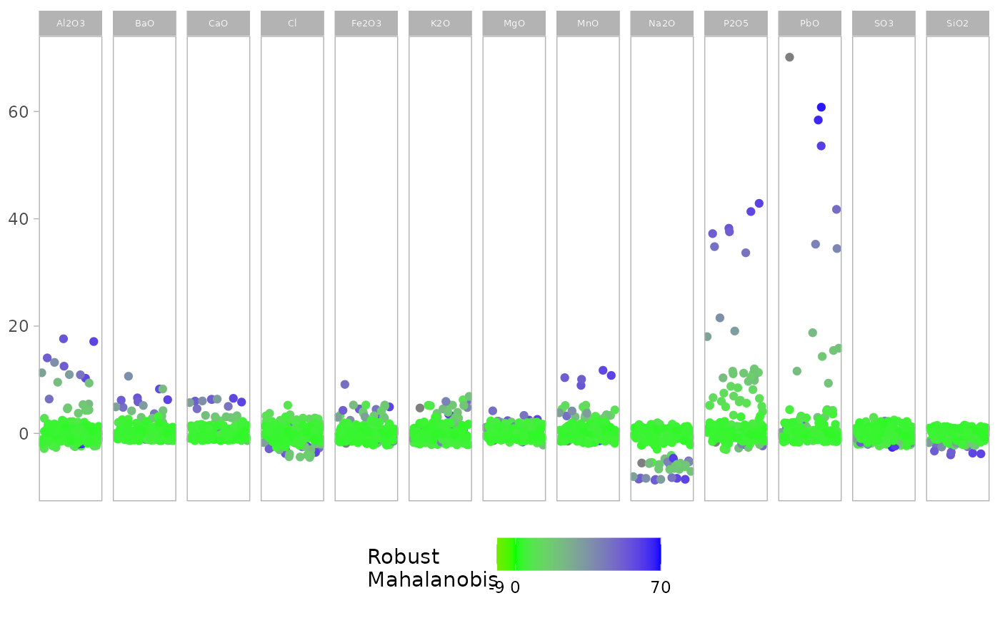
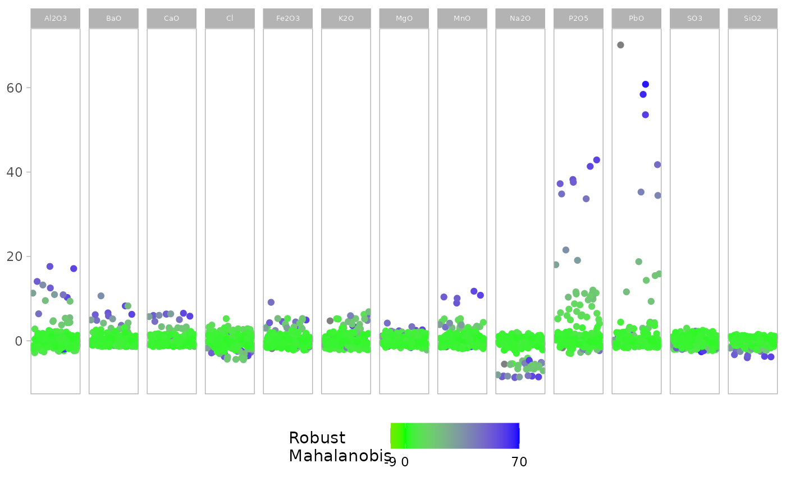

This function creates a visual representation of multivariate outliers using a univariate plot.It uses robust covariance estimation methods to identify outliers and provides options for displaying the results through various plotting styles.
Arguments
- x
A matrix or data frame.
- quan
A numeric value, between 0.5 and 1, that specifies the amount of observations which are used for MCD estimations. Default is 0.5.
- alpha
A numeric value specifying the amount of observations used for calculating the adjusted quantile. Default is 0.025.
- show.outlier
A logical value, if
TRUE(default), outliers are highlighted in the plot.- show.mahal
A logical value, if
FALSE(default), robust Mahalanobis distances are not color-coded in the plot.
Value
Depending on the combination of show.outlier and show.mahal:
A
ggplotobject with outliers highlighted (ifshow.outlier = TRUE)A
ggplotobject with Mahalanobis distances color-coded (ifshow.mahal = TRUE)A
ggplotobject combining both outlier highlighting and Mahalanobis distance color-coding (if bothshow.outlierandshow.mahalareTRUE)A tibble containing standardized scores, outlier flags, and robust multivariate Mahalanobis distances (if both
show.outlierandshow.mahalareFALSE)
Details
The function uses the Minimum Covariance Determinant (MCD) method to compute robust estimates
of location and scatter. It then applies an adaptive reweighting step to further improve
the outlier detection. The results are visualized using ggplot2, with options to highlight
outliers and/or color-code points based on their Mahalanobis distances.
Examples
# Load the glass dataset from the chemometrics package
data(glass, package = "chemometrics")
# Basic usage with default parameters
outlierplot(glass)
 # Adjust the proportion of observations used for MCD estimation
outlierplot(glass, quan = 0.75)
# Show Mahalanobis distances instead of outlier highlighting
outlierplot(glass, show.outlier = FALSE, show.mahal = TRUE)

# Combine outlier highlighting and Mahalanobis distance color-coding
outlierplot(glass, show.outlier = TRUE, show.mahal = TRUE)
# Return data frame instead of plot
result_df <- outlierplot(glass, show.outlier = FALSE, show.mahal = FALSE)
head(result_df)
#> # A tibble: 6 × 15
#> Na2O MgO Al2O3 SiO2 P2O5 SO3 Cl K2O CaO MnO Fe2O3
#> <dbl> <dbl> <dbl> <dbl> <dbl> <dbl> <dbl> <dbl> <dbl> <dbl> <dbl>
#> 1 -0.382 0.0268 -0.993 0.123 7.51 -1.82 2.45 -1.36 0.695 1.52 -0.0452
#> 2 -0.195 -0.0624 -1.00 -0.0757 8.17 -2.24 2.69 -1.15 0.637 1.66 -0.379
#> 3 0.111 1.20 -0.721 -1.20 8.78 -1.64 2.04 -1.49 1.60 4.95 0.384
#> 4 0.196 0.341 -0.597 -1.04 11.4 -0.883 2.87 -1.46 1.50 3.36 0.777
#> 5 -0.269 0.378 -2.30 0.421 5.06 -1.55 2.69 -1.74 0.705 -0.690 -1.50
#> 6 -0.577 -0.860 2.81 0.673 5.25 -2.03 2.22 -1.27 -0.337 4.52 3.36
#> # ℹ 4 more variables: BaO <dbl>, PbO <dbl>, outlier <lgl>, mahalanobis <dbl>
# Adjust the proportion of observations used for MCD estimation
outlierplot(glass, quan = 0.75)
# Show Mahalanobis distances instead of outlier highlighting
outlierplot(glass, show.outlier = FALSE, show.mahal = TRUE)

# Combine outlier highlighting and Mahalanobis distance color-coding
outlierplot(glass, show.outlier = TRUE, show.mahal = TRUE)
# Return data frame instead of plot
result_df <- outlierplot(glass, show.outlier = FALSE, show.mahal = FALSE)
head(result_df)
#> # A tibble: 6 × 15
#> Na2O MgO Al2O3 SiO2 P2O5 SO3 Cl K2O CaO MnO Fe2O3
#> <dbl> <dbl> <dbl> <dbl> <dbl> <dbl> <dbl> <dbl> <dbl> <dbl> <dbl>
#> 1 -0.382 0.0268 -0.993 0.123 7.51 -1.82 2.45 -1.36 0.695 1.52 -0.0452
#> 2 -0.195 -0.0624 -1.00 -0.0757 8.17 -2.24 2.69 -1.15 0.637 1.66 -0.379
#> 3 0.111 1.20 -0.721 -1.20 8.78 -1.64 2.04 -1.49 1.60 4.95 0.384
#> 4 0.196 0.341 -0.597 -1.04 11.4 -0.883 2.87 -1.46 1.50 3.36 0.777
#> 5 -0.269 0.378 -2.30 0.421 5.06 -1.55 2.69 -1.74 0.705 -0.690 -1.50
#> 6 -0.577 -0.860 2.81 0.673 5.25 -2.03 2.22 -1.27 -0.337 4.52 3.36
#> # ℹ 4 more variables: BaO <dbl>, PbO <dbl>, outlier <lgl>, mahalanobis <dbl>